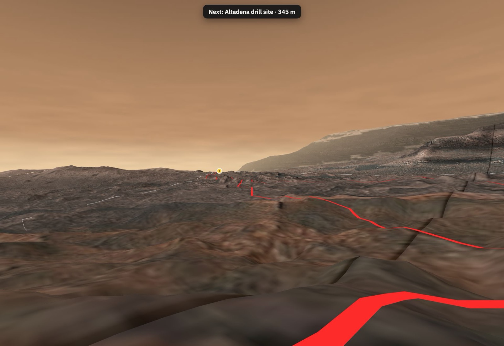
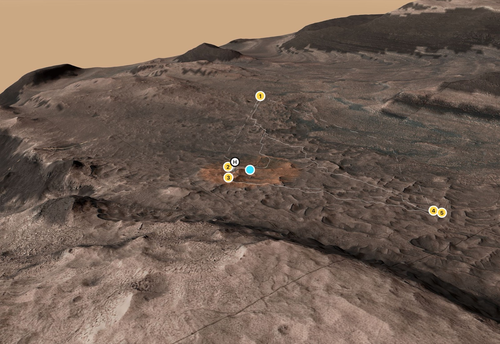

Vesta Scout · the guided mission
Look before you walk.
Pick science stops, plan the route, send a scout helicopter to find the rocks orbit can’t see, then walk.

Two tools, one map of Mars. Start with the guided mission.
Vesta Scout · the guided mission
Pick science stops, plan the route, send a scout helicopter to find the rocks orbit can’t see, then walk.

Vesta Vision Early version
The site in 3D, down to eye level: follow the red line to the next stop.
About
Mission: Vesta is a set of tools to plan those walks with NASA’s own Mars data. We built it for NASA Space Apps 2026, on a 2 × 2 km slice of lower Mount Sharp in Gale crater, where the Curiosity rover drilled.
~1.5 m
The smallest rock orbit reliably sees. The ones that trip a walker are smaller.
4–22 min
For a message to reach Earth. Mission control can’t guide each step.
~8 h
Of oxygen in a spacesuit. Every step out has to leave enough to walk back.
So we build that map: start from NASA’s orbit data, scout the route from the air, then walk with the way home always in view.
Method · our process
Orbit sees the whole site, but not the small rocks. A scout helicopter sees them, but only along its path. So each step tells the next one where to look.
Vesta Scout runs these four steps as a guided mission. Vesta Vision is the map underneath: every layer, in 3D, down to eye level.
Vesta Scout
Pick science stops from the habitat. A simulated scout helicopter, like NASA’s Ingenuity, flies the route first and finds the rocks orbit can’t see. Then the walk is planned around them.
Planned from orbit: 908 m, 435 kJ. It crosses 2 rock cells the scout later found.
Planned after scouting: 931 m, 442 kJ, no rock crossed. 23 m and 7 kJ more, 35% of the walking budget.

Vesta Vision Early version
The site as a 3D map: NASA’s 1 m terrain with HiRISE colour, and the layers behind every route.
Stand 1.7 m above the ground and walk. A red guide line follows the planned route, and the label names the next stop and how far it is.
What orbit sees: HiRISE colour at 25 cm, draped on the HiRISE stereo terrain.
Green is walkable, amber is near the 20° limit, red is too steep. Red lines: steps too high to climb in the 1 m terrain. White pins: rocks a person confirmed.
The energy it takes to walk back to the habitat from every cell. Dark is cheap, pale costs more.



Docs